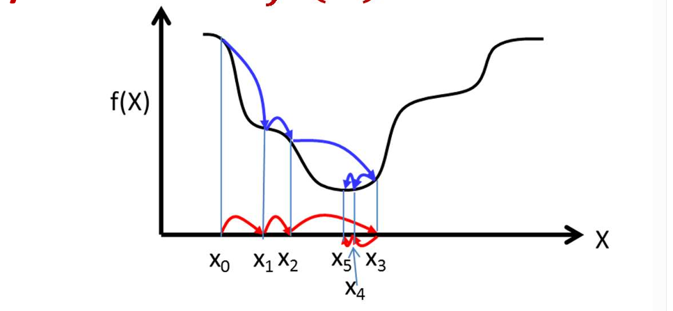

Most machine learning algorithms learn by minimizing a loss function $L(\theta)$ that measures how wrong the model is, where $\theta$ denotes the model parameters. Two separate ideas make this work: (1) computing the derivative (gradient) of the loss with respect to every parameter, and (2) Gradient Descent, the optimization rule that uses those derivatives to update the parameters and reduce the loss. Gradient Descent itself is generic: it only needs $\frac{\partial L}{\partial \theta}$ and does not care which model produced it. How that derivative is obtained depends on the model.
Gradient Descent is the cornerstone of mathematical optimization and the backbone of many ML algorithms, such as Linear/Logistic Regression and Support Vector Machines (SVMs). It is also the "learning engine" of Neural Networks and every major deep learning architecture (CNN, RNN, LSTM, Transformers/LLMs). In this tutorial we first present Gradient Descent in its generic form, then show how the gradient is computed, using Linear/Logistic Regression as simple examples and Backpropagation in a neural network layer as the worked example.
The generic optimization framework used to train machine learning models:

Figure: Visualization of the Gradient Descent "landscape" and optimization path.Blue Lines (Path on the Error Surface): These represent the steps taken along the actual function or "landscape" ($f(x)$). They visualize how the error value changes as the algorithm moves from one state to the next.Red Lines (Path in the Parameter Space): These represent the updates made to the variable $x$ (such as weights or biases) on the horizontal axis. They show the physical distance and direction the algorithm moves in the parameter space during each iteration.
$f(x)$ (The Objective/Loss Function): This represents the "landscape" or the error. In machine learning, $f(x)$ measures how far off your model's predictions are. Our goal is to find the value of $x$ that makes $f(x)$ as small as possible. $x^k$ (Current State): This is the value of your parameters (like weights) at step $k$. $\frac{\partial f}{\partial x^k}$ (The Gradient): This is the derivative. It tells you the slope and the direction of the steepest ascent(See the Figure above). $\eta$. This derivative computation is the central part of Back Propogation algorithm (Learning Rate / Step Size): This determines how large of a step you take. If it's too large, you might overstep the bottom; if it's too small, the hiker moves too slowly. $\epsilon$ (Epsilon/Tolerance): This is your "stopping condition." Since the algorithm might never reach the exact zero, we stop when the change in error becomes so tiny that it’s no longer worth calculating. Learning rate/Step size and epsilon are parameters set externally. There are many such parameters in the advanced versions of Gradient Descent. We should discuss separately about these parameters later.
The algorithm above describes Generic Gradient Descent. In a machine learning model, the variables represented by $x$ in the formula are the model parameters, collectively written as $\theta$ (for example, the coefficients and intercept in Linear Regression, or the weights ($W$) and biases ($b$) in a Neural Network). Hence, we write the differentiation of the Loss function with respect to $\theta$ as $\nabla_\theta L$, and the generic update becomes $\theta \leftarrow \theta - \eta \, \nabla_\theta L$.
These parameters are the variables of the Loss Function. During training, the Derivative is computed specifically with respect to these weights. This tells the model exactly how to "nudge" each parameter to minimize the error.
Because calculating these derivatives for every weight across the entire dataset at once is memory-intensive, we use three main implementations:
Batch Gradient Descent (BGD) is the most straightforward and deterministic version of the gradient descent algorithm. In this approach, the model calculates the error for every single example in the entire training dataset before any weights are updated.
Because it aggregates information from the whole data collection at once, the resulting gradient is a very stable and accurate representation of the overall error surface. This allows the algorithm to follow a smooth, direct path toward the minimum, avoiding the "jittery" or erratic movements seen in stochastic methods. However, this precision comes at a high cost: it is extremely slow and requires immense memory to store the gradients for the entire dataset simultaneously.
Stochastic Gradient Descent (SGD) is a powerful and widely used optimization algorithm in machine learning designed to minimize a model's loss function. Unlike Batch Gradient Descent, which computes the gradient using the entire training dataset for every single update, SGD performs parameter updates using only a single training example (or a small "mini-batch") at each step.
This makes the algorithm significantly faster and more memory-efficient, especially when dealing with massive datasets that cannot fit into memory. Because the gradient is calculated based on just one sample, the updates are often "noisy"—meaning the loss doesn't always decrease smoothly in every step. However, this randomness is actually a feature: it helps the algorithm "jump out" of local minima or saddle points, often leading to a better overall solution in complex, non-convex landscapes.Mini-Batch Stochastic Gradient Descent (Mini-batch SGD) is the most common variation of gradient descent used in modern deep learning because it strikes a perfect balance between Batch Gradient Descent and pure SGD.
Instead of using the entire dataset (which is slow) or just a single data point (which is noisy), this algorithm divides the training data into small, manageable groups called mini-batches (typically in powers of two, like 32, 64, or 128). By calculating the gradient based on these small groups, the algorithm benefits from the computational efficiency of vectorized operations on modern hardware like GPUs, while still maintaining enough "noise" to help the model escape local minima. This results in smoother convergence than pure SGD and significantly faster training times than Batch GD.
Comparing three Gradient Descents, we have this table
| Algorithm | Gradient Behavior | Trajectory & Motion | Pros & Cons |
|---|---|---|---|
| Batch Gradient Descent | Calculated using the entire dataset before every single weight update. | Perfectly smooth, deterministic, and zero-variance. Points directly down the steepest slope toward the minimum. | Pros: Extremely stable trajectory. Cons: Computationally prohibitive and painfully slow for large datasets. |
| Stochastic Gradient Descent (SGD) | Calculated using a single randomly chosen sample per step. | Highly erratic, noisy, and high-variance. Bounces back and forth wildly around the optimal path. | Pros: Noise can help jump out of shallow local minima or saddle points. Cons: Very slow and erratic convergence near the minimum; often requires a decaying learning rate. |
| Mini-Batch Gradient Descent | Calculated over a small batch of samples (e.g., 32, 64, 256). | Moderately smooth with controlled, manageable variance. | Pros: Strikes the optimal engineering balance—stable enough for steady progress without massive overhead or chaotic bouncing; foundation of modern deep learning. Cons: Requires tuning batch size. |
Batch, SGD and Mini-batch SGD all move using only the current gradient. This causes two familiar problems. In a long, narrow valley the gradient points mostly across the valley, so the path zig-zags from wall to wall while making slow progress along it. With mini-batches each gradient is also noisy, so the direction jitters from step to step. On a flat region the gradient is tiny and the steps crawl.
Momentum fixes this by remembering past gradients. Think of a heavy ball rolling downhill: it builds up speed in a direction it is pushed consistently, while sideways pushes that keep changing sign cancel out.
# Generic momentum update (theta can be any parameter array)
v = np.zeros_like(theta) # velocity, kept between steps
for step in range(num_steps):
g = grad(theta) # batch / SGD / mini-batch gradient
v = beta * v + g # remember past gradients
theta -= eta * v # move along the velocity
Convention note: this is the form used by PyTorch's torch.optim.SGD(momentum=beta). Some books write $v \leftarrow \beta v - \eta g,\ \theta \leftarrow \theta + v$, which gives the same path for a constant $\eta$. Adam uses an averaged version, $m_t = \beta_1 m_{t-1} + (1-\beta_1) g_t$, whose size is $(1-\beta_1)$ times that of $v_t$; Adam and AdamW, which combine this idea with a per-parameter step size, are covered on the Neural Networks page.
Gradient Descent needs $\nabla_\theta L$, but it does not say how to compute it. This depends on the model:
| Model | Loss $L$ | Gradient $\nabla_\theta L$ | How it is obtained |
|---|---|---|---|
| Linear Regression | $\frac{1}{N}\|Xw - y\|^2$ | $\frac{2}{N} X^T (Xw - y)$ | Closed-form derivative |
| Logistic Regression | Cross-entropy | $\frac{1}{N} X^T (\sigma(Xw) - y)$ | Closed-form derivative |
| Neural Network | Any differentiable loss | $\frac{\partial L}{\partial W_i},\ \frac{\partial L}{\partial b_i}$ for every layer $i$ | Backpropagation (chain rule, layer by layer) |
| Any model in a framework | Any differentiable loss | Computed by the framework | Automatic differentiation (see Automatic Differentiation below) |
A neural network is a long chain of nested functions, so its gradient is not a single closed-form expression. Backpropagation applies the chain rule backward through the layers and reuses intermediate results, which gives the derivative for every weight in one backward sweep. Whatever model or method supplies $\nabla_\theta L$, the optimizer (Gradient Descent, SGD, Mini-Batch SGD, Adam, ...) then uses it in the same way. The rest of this section works through Backpropagation for a single layer of a neural network.
Notation: the layer index here is $i$. On the Neural Networks page the same quantities are written $\mathbf{a}^{(l)}$, $\mathbf{W}^{(l)}$, $\mathbf{z}^{(l)}$ with layer index $l$, so $A_i, W_i, Z_i$ correspond to $\mathbf{a}^{(l)}, \mathbf{W}^{(l)}, \mathbf{z}^{(l)}$.
During Backpropagation, we receive $\frac{\partial L}{\partial A_i}$ from the layer ahead. We then perform three specific differentiations:
We "undo" the Sigmoid function to find how the loss changes with respect to $Z$.
dZ = dA * sigmoid_derivative(A)
In Step A, we found $dZ$ (the error signal). Now, we calculate exactly how to adjust the weights to reduce that error.
Since $Z_i = W_i \cdot A_{i-1} + b_i$, the partial derivative of $Z_i$ with respect to $W_i$ is simply the input $A_{i-1}$. This means the weight's contribution to the error is directly proportional to the signal it carried.
Formula: $$\frac{\partial L}{\partial W_i} = dZ_i \cdot (A_{i-1})^T$$
dW = (1/m) * np.dot(dZ, A_prev.T)
Why the Transpose ($T$)? To align the dimensions of our matrices. For a single weight $w_{jk}$, the gradient is $dZ_j \cdot a_k$. The dot product with a transpose calculates this for every weight in the layer at once.
We "pass the baton" backward to the previous layer.
dA_prev = np.dot(W.T, dZ)
Figure shows Gradient flow back to the network. Arrows point backward; the label on each connection is the derivative of the loss with respect to it.
# Backward pass through layer i (3 inputs a_k -> 2 neurons z_j), as in the figure
# Inputs : dA = dL/dA_i from layer i+1 / loss (purple arrows)
# W, b = layer weights (2x3) and biases (2)
# A_prev = A_{i-1} (3,) Z = W @ A_prev + b (2,)
def backward_layer(dA, W, b, A_prev, Z, eta):
# Step A (red): dL/dZ_j = dL/dA_j * sigma'(Z_j)
s = sigmoid(Z)
dZ = dA * s * (1 - s)
# Step B (orange): derivative on every connection a_k -> z_j
dW = np.zeros_like(W)
for j in range(2): # z_j
for k in range(3): # a_k
dW[j, k] = dZ[j] * A_prev[k] # dL/dw_jk
db = dZ # same as np.outer(dZ, A_prev) for dW
# Step C (blue): gradient sent back to the previous layer
dA_prev = W.T @ dZ # dL/dA_k = sum_j w_jk * dZ_j
# Gradient descent update (uses the derivatives on the connections)
W -= eta * dW
b -= eta * db
return dA_prev # becomes dA for layer i-1Each derivative $\frac{\partial L}{\partial w_{jk}}$ on a connection is one component of $\nabla_\theta L$, so the last two lines of the algorithm are exactly the generic update $\theta \leftarrow \theta - \eta \, \nabla_\theta L$ applied to the weights and biases.
To train with momentum, keep one velocity per parameter array between steps (for example vW = np.zeros_like(W) and vb = np.zeros_like(b), created once and stored with the layer) and replace the two update lines with vW = beta*vW + dW; W -= eta*vW and vb = beta*vb + db; b -= eta*vb. The backward pass that produces dW and db does not change; see Momentum.
Each layer calculates its own local derivative and multiplies it by the one it received:
| Derivative | Math Symbol | NumPy Variable | Purpose |
|---|---|---|---|
| Output Error | $\frac{\partial L}{\partial A_i}$ | dA |
The error signal received from the next layer. |
| Activation Grad | $\frac{\partial L}{\partial Z_i}$ | dZ |
The error signal filtered through the activation function. |
| Weight Grad | $\frac{\partial L}{\partial W_i}$ | dW |
The final differentiation used to update weight values. |
| Input Grad | $\frac{\partial L}{\partial A_{i-1}}$ | dA_prev |
In the worked example above we derived $dZ$, $dW$ and $dA_{i-1}$ by hand for one sigmoid layer. If we change the layer (a different activation, a normalization layer, an attention block), we must derive and code a new set of formulas. Automatic Differentiation (AD) removes this work: it computes exact derivatives of any function written as a program, by applying the chain rule mechanically. Libraries such as PyTorch (torch.autograd), TensorFlow (GradientTape) and JAX (jax.grad) are built on it. To see how it works, we start from the chain rule itself.
If $y$ depends on $x$ through an intermediate variable $u$, that is $x \to u \to y$, then:
When $y$ reaches $x$ through several intermediate variables $v_1, \dots, v_k$ (several paths), the contributions add up:
Take a function of two inputs (a classic example in the AD literature):
Applying the rules for $\ln$, products, $\sin$ and sums:
At $(x_1, x_2) = (2, 5)$ this gives $\frac{\partial y}{\partial x_1} = 0.5 + 5 = 5.5$ and $\frac{\partial y}{\partial x_2} = 2 - \cos 5 \approx 1.7163$.
This function is small, so the derivation is easy. Now imagine the same job for a network with hundreds of operations and millions of parameters:
The chain rule itself is not the difficulty: it is a single rule, and applying it to one composition takes only a few lines of code. The difficulty is that we must apply it by hand to a specific function. We first derive that function's closed-form derivative (as we just did) and then type the formula into code. That formula is valid only for that one function, so every change to the model sends us back to the derivation. Notice what the example actually used: derivative rules for a handful of elementary operations ($+$, $\times$, $\ln$, $\sin$). If a program can break any function into such operations, it can apply those rules and the chain rule by itself, with no hand derivation. That is the role of the computation graph.
We rewrite $f$ as a sequence of elementary steps, each producing one intermediate variable $v_i$. This list is called the evaluation trace:
| Node | Operation | Value at $(x_1,x_2)=(2,5)$ |
|---|---|---|
| $v_1$ | $x_1$ | 2 |
| $v_2$ | $x_2$ | 5 |
| $v_3$ | $\ln v_1$ | 0.6931 |
| $v_4$ | $v_1 \cdot v_2$ | 10 |
| $v_5$ | $\sin v_2$ | $-0.9589$ |
| $v_6$ | $v_3 + v_4$ | 10.6931 |
| $v_7$ | $v_6 - v_5$ (this is $y$) | 11.6521 |
Drawing each $v_i$ as a node and an arrow from every input of an operation to its result gives the computation graph:
Each edge carries a local derivative $\frac{\partial v_j}{\partial v_i}$. It depends only on that one elementary operation, so it is trivial to compute (for example $\frac{\partial (v_1 v_2)}{\partial v_1} = v_2$). The chain rule from Section 1 now reads: multiply the local derivatives along each path from an input to $y$, and add over paths. For our example:
| Input | Path | Product of local derivatives |
|---|---|---|
| $x_1$ | $v_1 \to v_3 \to v_6 \to v_7$ | $0.5 \cdot 1 \cdot 1 = 0.5$ |
| $v_1 \to v_4 \to v_6 \to v_7$ | $5 \cdot 1 \cdot 1 = 5$ | |
| Sum: $\frac{\partial y}{\partial x_1}$ | 5.5 | |
| $x_2$ | $v_2 \to v_4 \to v_6 \to v_7$ | $2 \cdot 1 \cdot 1 = 2$ |
| $v_2 \to v_5 \to v_7$ | $\cos 5 \cdot (-1) \approx -0.2837$ | |
| Sum: $\frac{\partial y}{\partial x_2}$ | 1.7163 | |
These match the hand-derived values. But listing every path does not scale: in a deep network the number of paths grows exponentially with depth. AD avoids listing paths by accumulating the products node by node, and there are two orders in which to do it.
Both methods compute exactly the same sum of path products. They differ only in the direction in which the products are accumulated: from the inputs toward $y$ (forward), or from $y$ back toward the inputs (reverse).
Pick one input, say $x_1$, and track how every node changes with it. Define the tangent of a node as $\dot{v}_i = \frac{\partial v_i}{\partial x_1}$. Seed the inputs with $\dot{x}_1 = 1$, $\dot{x}_2 = 0$, then propagate through the graph together with the forward pass:
The table shows two sweeps: one seeded at $x_1$, one seeded at $x_2$.
| Node | Tangent rule | Sweep 1: $\dot{v}_i = \frac{\partial v_i}{\partial x_1}$ | Sweep 2: $\dot{v}_i = \frac{\partial v_i}{\partial x_2}$ |
|---|---|---|---|
| $v_1$ | seed | 1 | 0 |
| $v_2$ | seed | 0 | 1 |
| $v_3$ | $\dot{v}_1 / v_1$ | 0.5 | 0 |
| $v_4$ | $\dot{v}_1 v_2 + v_1 \dot{v}_2$ | 5 | 2 |
| $v_5$ | $\cos(v_2)\,\dot{v}_2$ | 0 | 0.2837 |
| $v_6$ | $\dot{v}_3 + \dot{v}_4$ | 5.5 | 2 |
| $v_7 = y$ | $\dot{v}_6 - \dot{v}_5$ | 5.5 | 1.7163 |
Now pick one output, $y$, and track how it depends on every node. Define the adjoint of a node as $\bar{v}_i = \frac{\partial y}{\partial v_i}$. This takes two phases:
| Node | Adjoint computation | Value |
|---|---|---|
| $\bar{v}_7$ | seed | 1 |
| $\bar{v}_6$ | $\bar{v}_7 \cdot 1$ | 1 |
| $\bar{v}_5$ | $\bar{v}_7 \cdot (-1)$ | $-1$ |
| $\bar{v}_4$ | $\bar{v}_6 \cdot 1$ | 1 |
| $\bar{v}_3$ | $\bar{v}_6 \cdot 1$ | 1 |
| $\bar{v}_2 = \frac{\partial y}{\partial x_2}$ | $\bar{v}_4 \cdot v_1 + \bar{v}_5 \cdot \cos v_2 = 1\cdot 2 + (-1)\cdot 0.2837$ | 1.7163 |
| $\bar{v}_1 = \frac{\partial y}{\partial x_1}$ | $\bar{v}_3 \cdot \frac{1}{v_1} + \bar{v}_4 \cdot v_2 = 0.5 + 5$ | 5.5 |
.grad).
For a function $f:\mathbb{R}^n \to \mathbb{R}^m$, the matrix of all derivatives is the Jacobian ($m \times n$). Forward mode produces it one column at a time, reverse mode one row at a time.
| Forward Accumulation | Reverse Accumulation | |
|---|---|---|
| Direction | Inputs $\to$ outputs, alongside the forward pass | Outputs $\to$ inputs, after a complete forward pass |
| Quantity propagated | Tangent $\dot{v}_i = \partial v_i / \partial x_k$ | Adjoint $\bar{v}_i = \partial y_l / \partial v_i$ |
| One sweep gives | One Jacobian column (one input, all outputs) | One Jacobian row (one output, all inputs) |
| Sweeps for the full Jacobian | $n$ (number of inputs) | $m$ (number of outputs) |
| Memory | No need to store intermediates | Must store forward values for the backward pass |
| Better when | Few inputs, many outputs ($n \ll m$) | Many inputs, few outputs ($n \gg m$) |
In machine learning the loss $L$ is a single scalar ($m = 1$) while the parameters number in the millions ($n \gg 1$). Reverse mode gets the entire gradient $\nabla_\theta L$ in one backward sweep, whereas forward mode would need one sweep per parameter. This is why deep learning frameworks use reverse mode.
Backpropagation is reverse accumulation applied to the computation graph of a neural network. The quantities we derived earlier are exactly adjoints and local rules:
A framework such as PyTorch records the graph while the forward pass runs. Every operation it provides knows its own local derivative rule, so calling backward() performs the reverse sweep for any combination of operations, with no hand derivation. For our example function:
import torch
x1 = torch.tensor(2.0, requires_grad=True)
x2 = torch.tensor(5.0, requires_grad=True)
y = torch.log(x1) + x1 * x2 - torch.sin(x2) # forward pass builds the graph
y.backward() # one reverse sweep
print(y.item()) # 11.652...
print(x1.grad.item()) # 5.5 = dy/dx1
print(x2.grad.item()) # 1.7163.. = dy/dx2The printed gradients match the hand derivation and both accumulation tables. Forward mode is also available in the frameworks (for example torch.func.jvp and jax.jvp) and is useful when a function has few inputs and many outputs.
This is not limited to fully connected networks. A CNN, an RNN or a Transformer is also a graph of operations, so the same reverse sweep trains it. When one parameter is used in several places (a convolution kernel at every position, an RNN's recurrent weights at every time step), there are several paths from the loss to that parameter, and by the chain rule from Section 1 the contributions add: its gradient is the sum over all its uses. For these gradients used inside a complete training loop (initialization, BatchNorm, Dropout, Adam/AdamW and early stopping), see The Full Training Loop on the Neural Networks page.